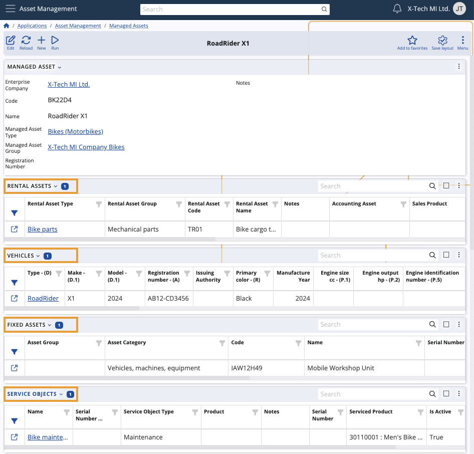

Asset Management
Enterprise asset management (EAM) involves the maintenance management of an organization’s physical assets throughout each asset's lifecycle. It is used to plan, optimize, execute, and track the needed maintenance activities with the associated priorities, skills, materials, tools, and information. This covers the design, construction, commissioning, operations, maintenance and decommissioning or replacement of plant, equipment and facilities.
You can learn more about EAM here.
In ERP.net, EAM deals with the maintenance and locations of the company assets.
In the following sections, we will describe the different entity types comprising the EAM data model.
Maintenance types
When planning the required maintenance of an asset, you can schedule and perform different types of maintenance procedures.
For example, if we have a car, we can plan:
- Insurance renewal - once per year
- Oil change - every 20,000 km
- Gearbox check - every 5 years OR 100,000 km
Each of the above represents a different maintenance type which can be scheduled based on a date and a tracked parameter change.
In an enterprise, there can be many different types of assets, each requiring its own maintenance type.
Some maintenance types may be applicable to multiple asset types and others - unique for specific asset types.
When a lot of maintenace types are present, they can be organized into Maintenance type groups.
Asset type maintenance
For each asset type, you can define what kind of maintenance is needed for its assets, as well as a default schedule.
Examples:
- Car
- Insurance - Every 12 months
- Oil - Every 15,000 km
- Gearbox
- Heavy truck
- Insurance - Every 12 months
- Oil - Every 30,000 km
- Gearbox
- Refrigerating compartment check etc.
- Aircraft
- A-Check - Every 200 cycles
- B-Check - Every 6 months
- C-Check - Every 20 months
- D-Check - Every 80 months
Note
Although both cars and heavy trucks need oil change, the required mileage is different.
In practice, every car and truck may have different mileage requirements.
Managed asset types
Depending on the management required by each asset, there can be different asset types.
These are used to categorize the assets and the tracked parameters for each type.
Examples:
- Car
- Heavy truck
- Aircraft
- Building
- Street lamp
- Computer
Tracked parameters
For each asset type, you can track different parameters.
Examples:
- Car
- Mileage (in km)
- Heavy truck
- Mileage (in km)
- Cycles
- Airplane
- Flight hours
- Cycles
The tracked parameters are used to track the usage and wearing out of the asset and hence plan the desired maintenance.
Service centers
When planning the maintenance of assets, maintenance procedures are executed by different service centers.
This works when each maintenance schedule for an asset is assigned to a respective service center.
The service center could be an authorized service center for the asset, but it may also be an employee executing the desired maintenance.
Managed assets
Managed assets are resources or items that an enterprise company owns or leases and keeps track of, such as equipment, vehicles, rental properties, or service tools. In ERP.net, these assets are organized and undergo maintenance planning and execution, location assignments tracking, etc.
Examples:
- Car Peugeot 508, Y2016, Reg.No. CC0303PM
- Car Jeep Grand Cherokee, Y2017, Reg.No.YY0202PS
- Mobile Station 5011
- AG Aircraft AT-502B
- Apartment 3B, 120 Main Street, Cityville
- Mobile Generator Unit 201
- MRI Scanner
Important
Every fixed asset, rental asset, fleet vehicle, and service object can be linked to a managed asset through the Managed Asset field present in their definitions. When creating them, make sure to specify the appropriate managed asset they will be tied to.
Defining assets as managed allows them to be tracked in one place - the definition of the managed asset they're related to. All you need to do is integrate them as panels, if they aren't already. That way, you will be able to see and access all of their important information.

For additional convenience, you can also generate custom reports for all fixed assets, rental assets, fleet vehicles and service objects united under a common managed asset.
Since there could be many managed assets, they can organized in a hierarchy of Managed asset groups.
Maintenance schedules
When an asset has a type defined for it, it inherits some default maintenance schedules.
However, each asset may be of different age and wear and might have unique maintenance needs.
That is why specific maintenance schedules for each managed asset are necessary.
Examples:
- Car Peugeot 508, Y2016, Reg.No. CC0303PM
- Insurance - Every 12 months
- Oil - Every 18,000 km
- Car Jeep Grand Cherokee, Y2017, Reg.No.YY0202PS
- Insurance - Every 12 months
- Oil - Every 20,000 km
Scheduled maintenances
Maintenance schedules define the general plan for maintenance. However, you need to schedule each specific maintenance as well.
Scheduling might be needed for different reasons:
- The time limit after the last maintenance was reached (by date).
- The mileage for the next maintenance was reached (by tracked parameter).
- The asset was purchased second hand and one initial maintenance should be scheduled after up to 20 days (manually planned).
Each of the above represents a maintenance schedule which can be both manually entered or automatically planned.
Note
Emergency repair is not planned and it is not considered scheduled maintenance.
Emergency repairs are directly processed through maintenance orders.
Locations
The EAM module allows for the tracking of asset assignments by different company locations and responsible persons.
Assets can also be re-assigned multiple times (even within a month).
Note
Asset assignment can be used to determine the cost centers to which the depreciation will be distributed.
Asset locations contain the following data about each assignment:
- Date of assignment
- Company location
- Responsible person
- Notes - for more precise location or other notes.
Maintenance orders
The maintenance order document is the final data piece in the EAM data model. It represents one specific appointment for a specific type of maintenance for one (or many) specific assets.
Orders are created by the maintenance planner to denote the actual appointment with the service center.
Document statuses correspond to the progress of the maintenance:
- Firm Planned - the maintenance is appointed with the service center for specific time and date.
- Released - the maintenance has started (used mostly for maintenances which are performed in-house)
- Completed - the maintenance was performed.
Maintenance orders can create other sub-documents to represent the actual work (like service orders) or the materials requested and used (store order / store transaction), etc.
Lines
One maintenance order can appoint the maintenance of multiple managed assets.
Each maintenance type for each asset is represented by one maintenance order line.